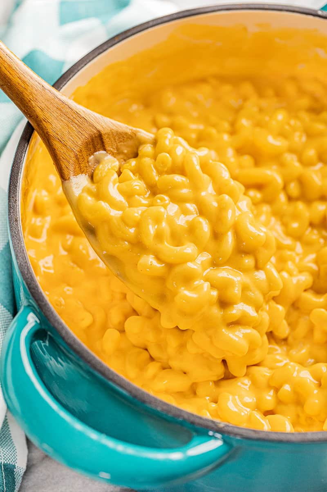

Easy Stove-top Mac and Cheese

Easy Stove-top Mac and Cheese is the easiest and most delicious Mac and cheese ever! Ready in just 15 minutes, this is an amazing weeknight dinner for busy families!
Mac and cheese is the ultimate comfort food. Is it because we have fond memories of the Blue Box as a kid? Possibly. Is it the irresistible cheesiness? Most definitely. While the Blue Box was great back in the day, our tastes have matured to move away from the store-bought mac and cheese. If you’ve never had made-from-scratch mac and cheese, you are in for a serious treat. We know parents and kids will agree that the real cheddar cheese in this creamy sauce just can’t be beat.
Ingredients:
- 1 pound elbow noodles
- 1/2 cup salted butter
- 1/2 cup all-purpose flour
- 1 1/2 teaspoon onion powder
- 1 1/2 teaspoon ground mustard
- 1 teaspoon salt
- 1/2 teaspoon white pepper
- 3 cups milk whole, 2%, or 1%
- 8 ounces shredded sharp cheddar cheese
Steps
- Fill a large saucepan with water, and bring to a boil. Stir in the macaroni; cook until al dente. Drain well.
- Meanwhile in another large saucepan, melt the butter over medium heat. Stir in the flour, salt, pepper, onion powder, and mustard powder and cook 1-2 minutes.
- Pour in milk and whisk until smooth. Cook over medium-high heat, stirring constantly, for 3-5 minutes until the sauce starts to thicken. Turn off the heat and whisk in cheese until melted.
- Pour cooked pasta into the cheese sauce and stir well to combine. Serve hot.